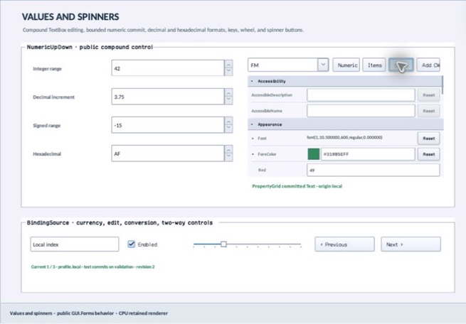

class · visual
FlagsValueEditor
FlagsValueEditor is a compact retained editor for independent-bit enumeration values. It validates descriptor/value membership, formats canonical names, owns a source-private dismissal layer and real CheckedListBox popup under Window popup/focus-scope leases, synchronizes checks without feedback, commits typed values immediately, and exposes configurable popup width.
Visual evidence

Ownership and hierarchy
- Hierarchy
- Panel → FlagsValueEditor
- Declaration
- include/gui_forms/controls/panel/flags_value_editor/flags_value_editor.hpp:11
- Definition
- src/controls/panel/flags_value_editor/flags_value_editor.cpp
Declared methods
FlagsValueEditor public
FlagsValueEditor(StableId stable_id, PropertyEnumDescriptor descriptor, PropertyEnumValue value)Constructs a focusable sunken flags field and validates initial descriptor/value.
descriptor public
[[nodiscard]] const PropertyEnumDescriptor& descriptor() const noexceptReturns the authoritative flags enumeration descriptor.
set_descriptor public
void set_descriptor(PropertyEnumDescriptor descriptor)Validates flags topology and reconciles current value, popup checks, paint, and semantics.
value public
[[nodiscard]] const PropertyEnumValue& value() const noexceptReturns the current typed PropertyEnumValue.
set_value public
void set_value(PropertyEnumValue value)Normalizes against the descriptor, commits a distinct typed value, and synchronizes an open popup without user feedback.
dropped_down public
[[nodiscard]] bool dropped_down() const noexceptReports whether the editor owns a connected popup/focus-scope lease.
set_dropped_down public
void set_dropped_down(bool dropped_down)Opens or closes through the common transient ownership state machine.
popup_width public
[[nodiscard]] double popup_width() const noexceptReturns preferred logical width for the checked-list popup.
set_popup_width public
void set_popup_width(double width)Validates [80, 1024] and rebuilds an open popup against client bounds.
value_changed public
[[nodiscard]] Event<const PropertyEnumValue&>& value_changed() noexceptReturns the event published after a typed flags commit.
drop_down_changed public
[[nodiscard]] Event<bool>& drop_down_changed() noexceptReturns the event published after transient ownership opens or closes.
on_paint public
void on_paint(Painter& painter, Rect local_damage) overrideRecords field frame, canonical flags text, disclosure affordance, focus, and invalid state.
on_pointer public
void on_pointer(PointerEvent& event) overrideQualifies primary field activation and opens/closes the popup.
on_key public
void on_key(KeyEvent& event) overrideHandles disclosure, commit navigation, and Escape closure.
on_focus_changed public
void on_focus_changed(bool focused) overrideCommits focus appearance independently of popup lifetime.
semantic_descriptor public
[[nodiscard]] SemanticDescriptor semantic_descriptor() const overrideProjects combo-box role, canonical typed value, expanded/invalid state, and actions.
on_semantic_action public
bool on_semantic_action(SemanticAction action, std::string_view value) overrideMaps press/expand/collapse to normal transient state changes.
on_detached_from_window protected
void on_detached_from_window() noexcept overridePublic FlagsValueEditor operation. Its exact signature is inventoried here; follow the linked implementation for callback order and failure behavior.
open_drop_down private
void open_drop_down()Public FlagsValueEditor operation. Its exact signature is inventoried here; follow the linked implementation for callback order and failure behavior.
close_drop_down private
void close_drop_down()Public FlagsValueEditor operation. Its exact signature is inventoried here; follow the linked implementation for callback order and failure behavior.
on_popup_revoked private
void on_popup_revoked()Public FlagsValueEditor operation. Its exact signature is inventoried here; follow the linked implementation for callback order and failure behavior.
synchronize_popup private
void synchronize_popup()Public FlagsValueEditor operation. Its exact signature is inventoried here; follow the linked implementation for callback order and failure behavior.
apply_popup_choice private
void apply_popup_choice(std::size_t popup_index, CheckState state)Public FlagsValueEditor operation. Its exact signature is inventoried here; follow the linked implementation for callback order and failure behavior.